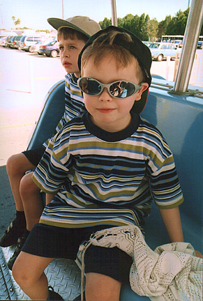

 |
|
Links to more recent photos ... |
|
John and William both go to Tavistock College. They
both enjoy going to the cinema. William takes guitar lessons as well as playing the tenor horn in both the junior section and youth section of the Tavistock Stannary Brass Band. William also plays tennis Friday evenings (weather permitting !) |
|
Date |
News Item |
11/11/2006 |
Today at 4:00 in the
morning John and about 20 of his school friends set off
on a fantastic 2 week educational trip to Tokyo in Japan.
John was selected to participate in this marvelous
opportunity because of all the hard work he has put into
studying Japanese since he started at the college in 2002. Follow this link to read the latest news and find links to photos from the trip on the school website ... Tavistock College: Japan 2006 |
08/11/2006 |
Tonight we all went to Plymouth to see "The Two Faces of Mitchell and Webb". We have really enjoyed their most recent TV comedy series ("That Mitchell and Webb Look") on BBC2, and were very excited when we learnt that they would be bringing their stage show to Plymouth. Almost 2 hours of great comedy and entertainment. |
23/10/2006 |
This evening William plus parents went to see Keane in concert in Plymouth. They were great ! |
23/09/2006 |
Today John and William
(plus Dad) went to Thorpe Park to ride the rollercoasters
there. Luckily none of the main rides were out of action
so we were able to go on all of them several times. Click here for photos of trip to Thorpe Park (2006) |
27/08/2006 |
This evening William went with his Mum and Dad to see "Snow Patrol" in concert at The Eden Project - that's 2 concerts there now in the same week ! |
22/08/2006 |
This evening John and
William (plus Dad) went to see "Muse" in
concert at The Eden Project (near St. Austel in Cornwall). It was a great concert, and The Eden Project was a fantastic venue for it. |
24/07/2006 |
Today we had a
Japanese student named Masaru Otsuka come to stay with us
for 8 days as part of an exchange scheme organised by
Tavistock College. John will be going out to Japan in November, although he will not be staying with Masaru's family. |
06/07/2006 |
This evening we
attended Tavistock College's "Class of 2002"
awards evening. Students were selected from the whole of year 9 to receive an award, and John was selected to receive an award for Japanese. Johns has previously won the Attainment Award (in 2005), the Special Tutor Award (in 2004), and the Effort Award (in 2003). Click on this link to see it ... John's 2006 Award |
04/07/2006 |
This evening we
attended Tavistock College's "Class of 2004"
awards evening. Deserving students were selected from the whole of year 8 to receive an award, and William was selected to receive the "World of Work Day" award (in his last school report it said that William's World of Work day project was the best in class). Last year William won the award for Japanese. Click on this link to see some pictures ... William's 2006 Award |
21/06/06 |
William's end of year
report for 2006 arrived today. He is on target in 15 out of 17 subjects, 8 of which are target level 6 and the rest level 5. He scored 1 "Excellent" (in Japanese), 27 "Very Goods" and 28 "Goods" in categories for Class Work, Attitude, Participation and Homework. His overall form tutor comments read "He is a helpful member of the tutor group. He is an able, conscientious student whose behaviour is always very good and he is making good progress." Well done William ! |
12/06/2006 |
Today John, along with
other Year 10 pupils from Tavistock College, participated
in an Enterprise Activities course hosted by the Tamar
Education Business Partnership, during which they were
taught skills in teamwork, communication, decision
making, business planning, creative capability and
presentation skills. John was part of the winning team for the business and enterprise challenge. Click here to see his certificate ... Enterprise Activities Certificate |
02/06/2006 |
Today John went away to Bath for the weekend with the youth group ("Reach") from our local church that he belongs to. |
21/05/2006 |
We have a new addition
to our family, as today our cousin Lorraine gave birth to
a baby boy, George. We are very excited for her and her
husband Graeme who can both expect lots of help taking
care of George from their daughter Nadine who is now 4
years old. Click here to view some photos ... George |
20/05/2006 |
Today William went on
a 1 day maths course being run by NAGTY (National Academy
for Gifted and Talented Youth) at the University of
Plymouth campus in Exmouth. The course was called "Nature's Numbers" and explored the development of the number system over the past few thousand years. Follow this link to see William's certificate ... Nature's Numbers |
13/05/2006 |
Today William went on
a 1 day art course being run by NAGTY (National Academy
for Gifted and Talented Youth) at The Royal Albert
Memorial Museum in Exeter. The course was called "Capture The Essence", and included a tour of ten drawings by Leonardo Da Vinci which were on loan to the museum as part of the Queen's 80th birthday celebrations. William really enjoyed this course and produced a super charcoal sketch as part of a drawing masterclass that ended the day. Follow this link for further details and to see William's certificate ... Capturing The Essence |
06/05/2006 |
This evening William
and the rest of the youth section of the Tavistock
Stannery Brass Band performed their very first concert at
the Tavistock Town Hall. Follow this link for details and photos ... Concert |
30/04/2006 |
This morning William
was confirmed by the Bishop of Exeter at St. Andrew's
Church, Whitchurch. His mother and brother acted as his sponsors, and presented him to the Bishop for confirmation into the Christian faith ... William's Confirmation Afterwards William went with his father and grandfather to watch Plymouth Argyle beat Ipswich 2-1 in their final match of the season. |
31/03/2006 |
Today John brought
home his annual report for 2006. Across 11 subjects he is on-target in 7 of them and excelling in the remaining 4. He receives marks in 4 areas (quality of class work, attitude to the subject, participation in classroom and response to homework) for each subject, and achieved 16 excellants, 21 very goods and 10 goods. Well done John !!!! |
19/03/2006 |
This afternoon we all went to watch the Plymouth Raiders basketball team play Brighton. Plymouth won, but were trailing during the first half. It was a very exciting game. |
05/03/2006 |
Today whilst visiting
our friends (the Jones') who live in Truro we went to a
rugby match to see the Cornish Pirates (who play in the
National League Division 1) play the Pertemps Bees (who
come from Birmingham). The Pirates fell behind from the start, but had a good second half and came from behind to win 21-13. Follow this link to The Pirates website ... Cornish Pirates |
02/03/2006 |
Today William has
brought home a certificate for receiving 75 Green Cards. Click on this link to see them ... Certificates |
16/02/2006 |
This evening William
and his Dad went to see "The Darkness" in
concert at The Plymouth Pavilions. It was a great evening, and the band put on a very good (and loud !) performance. |
21/12/2005 |
This evening John and William went on the annual trip organised by BAE SYSTEMS to the pantomime at The Theatre Royal in Plymouth to see "Jack and the Beanstalk" starring The Chuckle Brothers ... Panto 2005 |
07/12/2005 |
Today William has
brought home a certificate for receiving 50 Green Cards. Click on this link to see them ... Certificates |
28/11/2005 |
John received his half
term school short report today. Out of 11 GCSE subjects, he has scored "Excellent" in 6 of them, "Very Good" in 3 of them and "Good" in the 2 remaining subjects. Well done John !!! |
| 10/11/2005 | William received his
half term school short report today. Out of 14 subjects, he has scored "Excellent" in 1of them, "Very Good" in 6 of them, "Good" in 6 more, and inconsistent in the 1 remaining subject. Well done William !!! |
06/11/2005 |
Since starting back as
a Year 8 student following the summer holidays, William
has brought home certificates for receiving 10 and 25
Green Cards (which is what year 8 children get instead of
the Merit Marks they were awarded in Year 7). Click on this link to see them ... Certificates |
24/09/2005 |
Today William went on
a 1 day creative writing course being run by NAGTY (National
Academy for Gifted and Talented Youth) at Exeter
University. The course was called "Flesh In The
Inkpot", and was led by Tim Bowler, an author who
has won the Carnegie Medal for his book "The River
Boy" which William is currently reading. Click on this link to see William's certificate and Tim's autograph... Tim Bowler Course |
27/08/2005 |
Today John and William
returned from a 7 day holiday in Tunisia with their
Grandad which they both enjoyed very much. It was the
first time they had been to this north African country,
and unfortunately John suffered from tonsilitus for some
of the trip, and then had an adverse reaction to the
medication he was prescribed, but has now fully recovered. William got to go on a 2 day safari into the desert where he visited the site of the original Star Wars films, got to ride on a camel (click here for photo => Camel), and visited an ancient Roman amphi-theatre. Both boys got to enjoy lots of sun, swimmimg and fun-fair rides. |
14/08/2005 |
John returned from a 5 day camping trip with some friends from his church group to the Soul Survivor event (near Bristol). This a Christian spiritual event held each year for young people, and John enjoyed the trip very much. |
06/07/2005 |
This evening we
attended Tavistock College's "Class of 2002"
awards evening. 65 students were selected from the whole of year 9 to receive an award, and John was one of two students selected from his tutor group (9FX) to receive an award for "Attainment" because of the great scores he got in his end of year report (see item below). Last year John won the Special Tutor Award, and the year before that he won the award for "Effort". Click on this link to see it ... John's Attainment Award |
05/07/2005 |
Today John brought
home the results of his end of year report for 2005. He has scored 48 "Excellents", 22 "Very Goods" and 6 "Goods" - a brilliant report - well done John !!!!! |
04/07/2005 |
This evening we
attended Tavistock College's "Class of 2004"
awards evening. 58 students were selected from the whole of year 7 to receive an award, and William was selected from the whole of Year 7 to receive the "Subject Achievement Award" for Japanese (his teacher said that William is currently at Year 9 level in his work). Click on this link to see it ... Japanese Achievement Award |
03/07/2005 |
Today was William's 12th
birthday, and he had 6 of his friends round to play
before we had lunch, after which we set off to the cinema
to see the new version of "War of the Worlds"
which we all enjoyed very much. William got an electric guitar for his birthday, and 2 of his friends also brought their electric guitars round so that they could have a jam session together. |
25/06/2005 |
This afternoon William took part in a performance by The Tavistock Stannary Brass Band in The Meadows in Tavistock. As part of the Training Band William helped to perform several pieces of music, and then the entire band played a few more tunes at the end. There was a large audience who enjoyed listening to the music whilst having a picnic on a sunny afternoon in the park. |
12/06/2005 |
William's end of year
report for 2005 arrived today. He has scored 24 "Excellents", 41 "Very Goods", 13 "Goods" and 1 "Inconsistent" (a minor blip in an otherwise super report which William can be proud of at the end of his first year at Tavistock College). |
11/06/2005 |
Today William
completed the 2nd day of a 2 day course being run by
NAGTY (National Academy for Gifted and Talented Youth) at
Exeter University. The course was called "Harry
Potter meets the History Detective" and involved
teams solving and creating their own mysteries. The first
day of this course was held on 21st May, and William
enjoyed the 2 days very much. Click on this link to see the certficate that William received for attending the course ... Certificates |
07/06/2005 |
Today William was
awarded a Principal's Commendation certificate from
school for achieving 250 merit marks. Click on this link to see it ... Certificates |
19/04/2005 |
Today William was
awarded a Principal's Commendation certificate from
school for achieving 200 merit marks. Click on this link to see it ... Certificates |
04/04/2005 |
Today William was
officialy accepted into NAGTY which is the National
Academy for Gifted and Talented Youth which is run by
Warwick University. Click on this link to see William's certficate ... Certificates |
22/03/2005 |
John brought home his
half term school short report today. Out of 16 subjects, he has scored "Excellent" in 5 of them, "Very Good" in 9, and "Good" in the remaining 2 subjects. Well done John !!! |
21/03/2005 |
William received his
half term school short report today. Out of 16 subjects, he has scored "Excellent" in 2 of them, "Very Good" in 9, and "Good" in the remaining 5 subjects. Well done William !!! |
18/02/2005 |
John now has a new
page for his games reviews ... John's Games Reviews which you can also find in the Personal Interests section further down. |
21/01/2005 |
Today William brought
home his merit Marks certificate from Tavistock College
for reaching 150 merits, and he also received vouchers to
use in the school canteen and a special badge. Click on this link to see it ... Certificates |
17/01/2005 |
Today John brought
home a Green Card certificate from Tavistock College for
reaching 50 merits. Click on this link to see it ... Certificates |
10/01/2005 |
Today William was
awarded a Principal's Commendation certificate from
school for achieving 100 merit marks. Click on this link to see it ... Certificates |
23/12/2004 |
This evening both John and William went on an organised trip to the pantomime at The Theatre Royal in Plymouth to see "Cinderella" starring Brian Conley. |
15/12/2004 |
Today William brought
home his merit Marks certificate from Tavistock College
for reaching 75 merits, and he also received vouchers to
use in the school canteen. Click on this link to see it ... Certificates |
14/12/2004 |
William received his
end of term school short report today. Out of 16 subjects, he has scored "Excellent" in 4 of them, "Very Good" in 6, and "Good" in the remaining 6 subjects. He also received his CAT 3 scores (Cognitive Ability Tests) in which he was above average in all 3 areas (Verbal, quantative and non-verbal). Well done William !!! |
13/12/2004 |
John brought home his
end of term school short report today. Out of 15 subjects, he has scored "Excellent" in 5 of them, "Very Good" in 5, and "Good" in 4 subjects. Well done John !!! |
02/12/2004 |
Today William went on a school trip to visit The Eden Project in Cornwall. |
26/11/2004 |
This evening we went
to the Barbican Theatre in Plymouth to see a play called
"Laughing Gravy", which is a new comedy about
Stan Laurel, combining some hilarious Laurel and Hardy
comedy sequences and some intriguing surprises. It was
both funny and poignant - a look at the real life dramas
behind the laughs. Click here for details ... Laughing Gravy |
08/11/2004 |
Today John brought
home a Green Card certificate from Tavistock College for
reaching 30 merits. Click on this link to see it ... Certificates |
01/11/2004 |
Today William brought
home his merit Marks certificate from Tavistock College
for reaching 50 merits, and he also received a pen and
vouchers to use in the school canteen. Click on this link to see it ... Certificates |
30/10/2004 |
William went to his
first professional football match today when Plymouth
Argyle played West Ham United at home in front of a crowd
of 20,220. The result was a 1-1 draw, which was fair in the circumstances as William's cousin Graeme came with us, and he is a West Ham supporter. William's Grandfather was also with us at the match, making up four generations of the family in attendance. |
04/10/2004 |
Today William brought
home his merit Marks certificate from Tavistock College
for reaching 25 merits, and he also received a special
badge. Click on this link to see it ... Certificates |
24/09/2004 |
Today William brought
home his first Merit Marks certificate from Tavistock
College for reaching 10 merits. Good start William !!! Click on this link to see it ... Certificates |
20/08/2004 |
William went off to summer camp for 3 days with his Taekwon-Do class today. They were staying at Brown John's Copse campsite at Crossways near Dorchester this year. William had his own tent which he enjoyed sleeping in, and made some new friends as well as meeting up with some old ones from last year's camp. |
12/08/2004 |
Today's edition of the
Tavistock Times featured several group photographs of the
pupils of St.Peter's that participated in their school
play ("The Blue Crystal") on 15th July. One of the photographs included William who played the part of a scientist. |
21/07/2004 |
This afternoonWilliam
(and the rest of year 6) participated in his school's
leavers' service at St. Andrews church (Tavistock) in
front of a congregation comprising the rest of the
school, parents and other family members. Each of the pupils stepped up to the microphone to recite various memories they had of their time at St. Peter's school, the teachers that have helped them along the way, and what they are looking forward to when they start at secondary school (which in William's case will be Tavistock College, where he will be re-joining his brother). |
15/07/2004 |
This evening we went along to The Wharf (the local art, cinema and theatre complex) in Tavistock to see William playing the part of one of the scientists in his school's production of "The Blue Crystal". He delivered his very technical lines like a true professional, and the whole school took part in one way or another. They did a repeat performance on Friday evening also. |
13/07/2004 |
Today John was awarded
a Green Card certificate from school for reaching 200
merits. John was presented with his certificate (and a £10 WH.Smith gift voucher) in front of the whole of Year 8. There was only one other boy in Year 8 who also reached the 200 merit mark. Click on this link to see it ... Certificates |
29/06/2004 |
This evening we
attended Tavistock College's "Class of 2002"
awards evening. 62 students were selected from the whole of year 8 to receive an award, and John was selected from his tutor group (8FX) to receive his tutor's special award (last year he received an award for effort). Click on this link to see it ... Tutor Award 2004 |
21/06/2004 |
This evening at Tae
Kwon-do William received his 6th KUP (Green) belt and
certificate after taking his grading on Saturday 19th
June. Click on this link to see it ... Certificates |
14/06/2004 |
Today John was awarded
a Green Card certificate from school for reaching 160
merits. Click on this link to see it ... Certificates |
08/06/2004 |
Today our Mum's photo appeared in our local paper in an article about how she has qualified as a registered jewellery valuer ... click on this link to see the article and another photo ... Jill the "Golden Girl" |
07/06/2004 |
Today John was awarded
3 (overdue) Green Card certificates from school for
reaching 110, 125 and 140 merits. The 125 merit certificate also came with a £5 W.H. Smith gift voucher. Click on this link to see it ... Certificates |
28/05/2004 |
Today William returned from a 4 day
residential school trip to Avon and Somerset. Click on this link to find out where he went ... School Trip Details |
23/05/2004 |
This morning John was
confirmed by the Bishop of Plymouth at St. Andrew's
Church, Whitchurch. His Grandfather and Janice, his godmother, acted as his sponsors, and presented him to the Bishop for confirmation into the Christian faith ... Confirmation Photos |
16/04/2004 |
Today we returned back to England
having spent our Easter break on holiday in Florida. We had 2 very active weeks visiting all the theme parks there, which included ... SeaWorld, where we were able to pet the manta rays and stingrays, and we also got to feed and touch the dolphins. We also went on the new Kraken roller coaster. Disney's Magic Kingdom, where we had dinner with the Disney characters at the Liberty Tree Inn, and toured The Haunted Mansion. Islands Of Adventure, where we went on the new Hulk roller coaster, and the really great Spiderman ride. Disney's MGM Studios, where we went on the new "Rock 'n Roller Coaster", which is an in-door ride with a 360 degree loop in it - even Mum did this one, and enjoyed it ! (unlike The Tower of Terror which reduced her to tears again, just like it did on our previous trip here). Epcot, where we went on the new "Mission Space" ride, which simulates a real rocket lift-off, and where John enjoyed eating real Japanese food. Universal Studios, where we were able to ride "The Revenge of The Mummy" indoor coaster, which isn't yet officially opened to the public - it was great ! Disney's Animal Kingdom, where we went back in time to rescue a dinosaur. Wet 'n Wild, where they had really great water rides, and John went knee-boarding. Disney's Typhoon Lagoon, where we were able to swim with real sharks. Click here to see some photos ... Florida 2004 Photos |
22/03/2004 |
John brought home his
mid term school report today. Out of 15 subjects, he has scored "Excellent" in 4 of them, "Very Good" in 7, and "Good" in the remaining 4. Well done John !!! |
21/03/2004 |
This evening John, William and Jill went into Plymouth to see "The Sugarbabes" in concert. |
19/03/2004 |
Today John was warded both his 6th,
7th and 8th Green Card certificate from school for
receiving 60, 75 and 90 green cards (which is what year 8
children get instead of the Merit Marks they were awarded
in Year 7). Click on this link to see it ... Certificates |
13/02/2004 |
Today at 5:42pm our
new baby cousin, Imogen Trinity, was born to Sharon and
Kevin. She weighed in at 6 pounds 9 ounces, and we are
all very excited about this new addition to our family. Friday the 13th is certainly a lucky day for us !!!! Click here to see a photo ... Imogen |
01/02/2004 |
Today John was warded
both his 4th and 5th Green Card certificate from school
for receiving 40 and 50 green cards (which is what year 8
children get instead of the Merit Marks they were awarded
in Year 7). Click on this link to see it ... Certificates |
21/12/2003 |
William went to the Christmas party organised by his Tae Kwon-do club. It was held at the Playzone (in Plymouth) which is a huge indoor play area with climbing frames and slides ... etc. They also had a disco to provide extra entertainment for the children. |
19/12/2003 |
This evening both John and William went on an organised trip to the pantomime at The Theatre Royal in Plymouth to see "Dick Whittington" starring Gary Wilmot and "Boysie" from "Only Fools and Horses". |
15/12/2003 |
Today John was awarded
his 3rd Green Card certificate from school for receiving
30 green cards (which is what year 8 children get instead
of the Merit Marks they were awarded in Year 7). Click on this link to see it ... Certificates |
08/12/2003 |
This evening at Tae
Kwon-do William received his 7th KUP belt and certificate
after taking his grading on Saturday 6th November. Click on this link to see it ... Certificates |
08/11/2003 |
This evening William went to see Evanescense in concert at the Carling Apollo Hammersmith (formerly the Hammersmith Odeon) in London, with his Mummy and Daddy (John was not interested in going so kept his Nanny company). The concert was great and we would like to go and see them again when they next tour in England. |
30/10/2003 |
The boys had lots of fun "trick or treating" this evening as it was Halloween, although John did fall down a step in the dark at one house and grazed his leg. All the sweets they collected helped to ease the discomfort though !!! |
24/10/2003 |
Today John was awarded
his 2nd Green Card certificate from school for receiving
20 green cards (which is what year 8 children get instead
of the Merit Marks they were awarded in Year 7). Click on this link to see it ... Certificates |
13/10/2003 |
Today John was awarded
his first Green Card certificate from school for
receiving 10 green cards (which is what year 8 children
get instead of the Merit Marks they were awarded in Year
7). Click on this link to see it ... Certificates |
06/10/2003 |
Today our cousin Sharon sent us some pictures of the scan that she had of the baby she and Kevin are expecting around February next year ... Click here to see scan pictures |
15/09/2003 |
This evening at Tae
Kwon-do William received his 8th KUP belt and certificate
after taking his grading on Saturday. Click on this link to see it ... Certificates |
09/09/2003 |
William was awarded
the West Devon Borough Council Certificate of Achievement
to certify that he successfully completed the West Devon
Junior Life Skills Challenge at Okehampton Army Camp in
September 2003. Click on this link to see it ... Certificates |
03/09/2003 |
Today William brought
home a special certificate to mark his progression from
the beginner's group to the intermediate stage of the
"Stannary Brass Band" training band. Click on this link to see it ... Certificates |
15/08/2003 |
William went off to summer camp for 3 days with his Taekwon-Do class today. They were staying at The Forest Glade campsite near Collumpton. William had his own tent which he enjoyed sleeping in for the first time. |
02/08/2003 |
Today we spent the day
in London and visited the Titanic exhibition at The
Science Museum. Click here to visit the official website ... Science Museum - Titanic, The Artefact Exhibition This was really interesting and had lots of artifacts brought up the 2.5 miles from the wreck site. We each received a boarding pass at the start of the tour, and this had information about a real passenger, and at the end of the tour you discovered whether or not they had survived. We also went to see James Cameron's 3D film "Ghosts of the Abyss" at the IMAX cinema in the museum. This was a 3 dimensional film of a real journey down to the Titanic, and showed you around the actual wreck. In the evening we went along to the (original) Hard Rock cafe at Hyde Park Corner for dinner. There is lots of rock n' roll memorabilia on the walls, and loud rock music playing while you eat. We have also been to the Hard Rock Cafe in Orlando (inside the Universal Studios theme park). |
23/07/2003 |
This morning John and
his Daddy went into Plymouth to see The Queen present a
new Colour to the Royal Navy at a Fleet Assembly. We arrived at The Mayflower Steps (in The Barbican) approximately 5 minutes before The Queen's car pulled up, and both she and Prince Phillip got out to board a motor launch, which then took them out to HMS Ocean (anchored in Plymouth Sound) where the presentation took place. We had a great view of The Queen who was only about 15 to 20 feet in front of us. We then went up onto The Hoe from where we could see the large assembly of Royal Navy ships with the huge crowd of people already there watching events on 2 large television screens. Follow this link for more details ... BBC - Devon - The Queen is to present new Colours to the Royal Navy in Plymouth |
20/07/2003 |
William had his 10th birthday trip to the cinema to see "Daddy Day Care" with John and 6 of his school friends. This was preceded by a game of ten-pin bowling and then lunch at Pizza Hut. |
14/07/2003 |
Today William brought
home a special Merit Award from school for his
participation in last Friday's musical evening. Click on this link to see it ... Certificates |
11/07/2003 |
William appeared on
stage tonight at Tavistock Town Hall as part of a musical
evening arranged by his school. William played the Elvis Presley classic "Love Me Tender" on the tenor horn (which is the instrument he has been learning to play with the Tavistock Brass Band). |
| 08/07/2003 | This evening we
attended Tavistock College's "Class of 2002"
awards evening. 55 students were selected from year 7 to receive an award, and John was one of two students selected from his tutor group (7FX) to receive an "Effort" award. Click on this link to see it ... Certificates |
30/06/2003 |
William brought home
his annual school report for 2002-2003. He is doing very well, and all of his teachers had nothing but positive things to say about his work and attitude - well done William !! |
24/06/2003 |
Today John was awarded his 150
Merit Marks certificate from school . Click on this link to see it ... Certificates |
13/05/2003 |
Today John was awarded
his 125 Merit Marks certificate from school . Click on this link to see it ... Certificates |
01/05/2003 |
William's photo appeared in today's
edition of The Tavistock Gazette to mark the fact that he
has achieved his gold award from Tavistock library after
he finished reading his 100th book last week. He set out
on the "Book Track" 3 years ago, and already
has 4 badges marking his completion of 10, 25, 50 and 75
books. His favouroite book was the one he last read called "Ginger the Ninja - Dance of the Apple Dumplings" because "it was really funny". |
13/04/2002 |
John had his 12th birthday trip to the cinema to see "Johnny English" with William and 7 of his school friends. This was followed by lunch at Pizza Hut, and then a game of ten-pin bowling. |
04/04/2003 |
John brought home his
mid term school report today. Out of 15 subjects, he has scored "Excellent" in 5 of them, "Very Good" in 5, and "Good" in the remaining 5. Well done John !!! |
26/03/2003 |
Today John was awarded
a Principal's Commendation certificate from school for
achieving 100 merit marks. Click on this link to see it ... Certificates |
24/03/2003 |
This evening at Tae
Kwon-do William received his 9th KUP belt and certificate
after taking his grading yesterday. Click on this link to see it ... Certificates |
20/02/2003 |
Today John was awarded
his 75 Merit Marks certificate from school . Click on this link to see it ... Certificates |
09/02/2003 |
This afternoon John and William went ice skating for the very first time. They really enjoyed themselves, and were both extrememly good on the ice. William only slipped over 3 times, and John managed to stay upright for the entire one and a half hour session - it's all the practice they have had on their roller blades. |
20/01/2003 |
Today John was awarded
his 50 Merit Marks certificate from school . Click on this link to see it ... Certificates |
16/01/2003 |
Today John was really pleased to discover that another one of his pictures has been published in this month's edition of "Pokemon World" magazine. |
13/01/2003 |
Today John was awarded
his 40 Merit Marks certificate from school . Click on this link to see it ... Certificates |
26/12/2002 |
This week's local paper included a group photo with William at his Taikwon-Do awards evening held on the 16th December (see item further down). |
18/12/2002 |
John brought home his
end of term school report today. Out of 16 subjects, he has scored "Excellent" in 8 of them, "Very Good" in 3, and "Good" in the remaining 5. Well done John !!! |
16/12/2002 |
This evening at Tae
Kwon-do William received his P.U.M.A. Grade 2 belt and
certificate. Click on this link to see it ... Certificates |
25/11/2002 |
Today John was awarded
both his 20 and 30 Merit Marks certificates from school . He also received a badge and pen to go with his certificates. Click on this link to see it ... Certificates |
01/11/2002 |
Today we actually moved to our new house in Whitchurch near Tavistock. Our Nanny was staying with us during half term, so she moved with us, but had to go back home on the following Sunday. We now live a lot closer to our school friends, and it is better for our social activities. |
24/10/2002 |
Today we exchanged contracts on the new house we are moving to in Whitchurch (near Tavistock) next week. |
23/10/2002 |
William attended Cubs for the last time tonight as he would prefer to go to extra Tae Kwon-Do lessons on a Wednesday evening instead. |
17/10/2002 |
William attended his first rock concert this evening when he went to see "Coldplay" in Plymouth with his Mummy and Daddy - Coldplay were brilliant !!!!!! |
08/10/2002 |
Today John was awarded
a 10 Merit Marks certificate from school . Click on this link to see it ... Certificates |
14/09/2002 |
Today we had a great time visiting the National Marine Aquarium in Plymouth, which has the deepest shark tank in Europe. We saw a Clown fish which is the main character in the New Disney/Pixar film "Finding Nemo" which comes out next year (Summer 2003). We also enjoyed seeing the stingrays, the turtle, the sharks and the lion fish. There was lots mpre to see there, and would recommend it to anybody who comes to Plymouth. |
08/09/2002 |
Today John and William went to see the Moscow State Circus in Plymouth. There were lots of thrilling acts to see. |
04/09/2002 |
Today was John's first
day at Tavistock College which he has been very excited
about and looking forward to. He now travels to and from school on the bus which gives him a bit more independence. |
01/09/2002 |
Today we went to our
cousin Nadine's christening at the Holy Trinity Church in
Bracknell. Afterwards there was a reception buffet at the Sand Martins golf club in Wokingham. |
29/08/2002 |
Today John was really pleased to find that one of the colour pictures he drew of some of the new Pokemon characters has been published in this month's edition of "Pokemon World" magazine. |
24/07/2002 |
Today was John's last
day at St. Peter's school and there was a Year 6 Leaver's
Service held in Tavistock Parish Church with the whole
school in attendance. John (like his fellow class mates) got to say a few words about his fondest memories of his time at St. Peter's, and was also presented with a leaver's certificate signed by all of the teachers. |
24/07/2002 |
Today John received
his Personal Survival Level 1 certificate. Click on this link to see it ... Certificates |
20/07/2002 |
This afternoon we went to watch the World Class 1 Offshore Powerboat Racing practise in Plymouth Sound. |
18/07/2002 |
John and William both had roles to play in the St. Peter's School Jubilee Concert held in Tavistock's Town Hall this evening to celebrate the Queen's Golden Jubilee. |
15/07/2002 |
John and William both
brought home very good end of term school reports today. John's SAT results were two 5's and four 4's. William scored above average in 4 subjects, and average in 1 subject. |
14/07/2002 |
William had his 9th birthday trip to see "Scooby Doo" with John and 4of his school friends, which was followed by a birthday tea at Pizza Hut. |
13/07/2002 |
Today William received
his Golf Federaration Blue Merit Award certificate for
completing the second stage of his golfing lessons (levels
4 to 6). Click on this link to see it ... Certificates |
22/06/2002 |
Today John received his Golf
Federaration Blue Merit Award certificate for completing
the second stage of his golfing lessons (levels 4 to 6). Click on this link to see it ... Certificates |
17/06/2002 |
This evening at Tae
Kwon-do William received his P.U.M.A. Grade 1 belt and
certificate. (P.U.M.A. stands for Professional Unification of Martial Arts.) |
03/06/2002 |
The Queen's Golden
Jubillee was celebrated in our village today with lots of
events going on. William got his face painted with the Union Jack. Jill took part in the ladies Tug-of-war event (but sadly they did not win). There was a photo taken from the top of the church tower of all the villagers on the green. We won the music quiz in the village hall (but only by one point !). We had free burgers, hot dogs, ice-creams and cream teas. In the evening there was a disco in the village hall, after which the beacon was lit, and this was followed by a super fireworks show. |
24/05/2002 |
Today John returned from a 4 day
residential school trip to Avon and Somerset. Click on this link to find out where he went ... School Trip Details |
02/05/2002 |
A photograph of John and William, and the rest of their cub pack, appeared in the Tavistock Times Gazette this evening showing them at a recent educational visit to the town's police station and court buildings. |
01/05/2002 |
John started to go to football training sessions in Tavistock tonight. |
17/04/2002 |
Tonight was John's last night at cubs now that he is eleven - the end of another era. Both he and William earned their Navigator activty badges tonight, and John also earned his Home Help activity badge. |
12/04/2002 |
We have a new addition to our family, as today our cousin Lorraine gave birth to a baby girl, Nadine. We are very excited for her and her husband Graeme. Click here to view some photos ... Photos |
24/03/2002 |
John had his 11th birthday trip to see "Jimmy Neutron - Boy Genius" with William and 7 of his school friends. Before hand, we all had a game of ten-pin bowling, followed by lunch at Pizza Hut, before settling down to enjoy the film at The Warner Village cinema. |
11/03/2002 |
William received yet another prize from The Dandy - this time a soft toy dog called "Merlin" that is a TV character. |
15/02/2002 |
William received 1st prize in a Dandy Comic competition that he entered recently. The prize was a "Dragonball Z" adventure board game. |
14/02/2002 |
William's photo appeared in the Tavistock Times Gazette this week for taking part in the West Devon District Cub Scout chess tournament earlier this month (John also took part). |
06/02/2002 |
William received his 2nd cubs merit badge (Collectors) tonight for taking in part of his TY Beanie Baby collection and answering questions about them. |
21/01/2002 |
William started Tae Kwon-do lessons this evening at Tavistock College. |
17/01/2002 |
John appeared in this week's edition of The Cornish and Devon Post, among the rest of his Friday evening swimming class, after The Launceston Swimming Club raised £1,400 for Children In Need. |
10/01/2002 |
This evening at Cubs John was promoted to Sixer of White six. |
29/12/2001 |
Today both John and William received their Golf Federaration Red Merit Award certificates for completing the first stage of their golfing lessons. |
13/12/2001 |
John and William both appeared in the Tavistock Gazette today in a photograph of their Scout group following the "panto" they appeared in last Saturday evening (see 08/12/2001 item below). |
12/12/2001 |
Wiliam received his first cubs merit badge tonight for appearing in the scout show last Saturday evening. |
12/12/2001 |
John's picture appeared in today's (Plymouth) Evening Herald, along with his Granddad and England's under 18 international golfer Laura Eastwood, in an article about the official opening of the West Devon Golf Academy, which John and his granddad attended. Follow this link for story ... Celebrations for club |
09/12/2001 |
William came joint 4th in a tennis competition today. |
08/12/2001 |
This evening both John and William took part in the 1st Tavistock Scout Group Christmas show. John won a great desklamp in the raffle (from IKEA), and William won 2 packs of Penguin biscuits. |
07/12/2001 |
William received his 3rd "Bookworm" award from his school for accumulating 400 points. |
05/12/2001 |
William was officially invested into cubs tonight (he is a member of White six - John is in Green six). |
16/11/2001 |
John brought home 2
certificates from school today ... 1. West Devon Borough Council Certificate of Achievement to certify that John Howe successfully completed the West Devon Junior Life Skills Challenge at Okehampton Army Camp in September 2001. 2. Primary Mathematics Challenge Certificate awarded to John Howe who took part in the Primary Mathematics Challenge and achieved a Bronze Level result. |
15/11/2001 |
Tonight William finally "swam" up from Beavers to Cubs, which he will now be attending full time on Wednesday evenings with John. |
23/10/2001 |
Today William was awarded a "Certificate of Achievment" in recognition and completion of the primary guitar course stage one. |
07/09/2001 |
Today both John and
William took part in a nationwide school attempt to get
into the Guiness Book of Records by creating an
artificial earthquake. At 11am over a million children at
schools around the county all started jumping together
for 1 minute. It was recorded by the Guinness Book of
Records as the "greatest simultaneous jump in
history". |
30/08/2001 |
Today John and William went to the Dartmouth Royal Regatta, the 2nd largest regatta in the country. There were over 200 boats present, and they went for a trip on one. Afterwards they went crab fishing and caught 25 crabs between them. Of course they were all returned safely back to the sea - no crab supper for us ! |
08/08/2001 |
Last night we went to the 2nd leg of the British Fireworks championships on The Hoe in Plymouth. Please follow this link for more details ... This is Plymouth - Plymouth Evening Herald Online - News |
04/08/2001 |
Willam and John were very proud to
act as ushers at their cousin Lorraine's wedding to
Graeme Muirhead today at The Holy Trinity Church in
Bracknell, Berkshire. Click here to see some photos ... Photos |
12/07/2001 |
William attended his first cubs meeting, although still a Beaver. He will not officially move up to cubs until after the summer holidays, but will attend both meetings until then. |
08/07/2001 |
William had his 8th birthday trip to see "Shrek" with John and 5 of his school friends. Afterwards they all had a meal at Pizza Hut with Shrek toys for everyone! |
19/06/2001 |
John & William's school (St. Peter's) announced that they have recently received a DfEE "Achievement Award" in recognition of the continuing improvements in standards, based on the SATs results over the period 1997-2000. |
01/06/2001 |
In the very early hours of this
morning we felt the tremor from an earthquake measuring 3.6
on the Richter scale which affected Devon and Cornwall. Follow this link for further info ... BBC News | UK | Earthquake shakes south west England |
22/05/2001 |
William received his 4th Book Track award from our local library for reading his 75th book. |
18/05/2001 |
John came 24th (out of approximately 70) in his school "fun run" today. |
25/04/2000 |
This evening at Cubs, John received his Cub Scout Award and his Scout Family Badge for successfully completing several activities, e.g. tracking, country code, good turns and first aid. |
22/04/2000 |
John's cub pack attended the St. George's Day parade in Tavistock today, where John met and talked to John Burnett MP for West Devon and Torridge, and they had a photo taken of them together which appeared in the Tavistock Gazette. |
08/04/2001 |
John had his 10th birthday trip to see "Rugrats in Paris" with William and 5 of his school friends. Afterwards they all enjoyed a game of Quasar, but unfortunately their team lost 185 to -13. We all then had a meal at Pizza Hut. A good time was had by all ! |
18/02/2000 |
Both boys enjoyed a really interesting day out in London.Their first stop was at the Planetarium where there was lots to see about the sun and the planets in our solar system before experincing an exciting trip amongst the stars, including a trip through a worm hole ! Next stop was Madame Tussaud's, where they met waxwork replicas of lots of famous people, including "Manuel" (from Fawlty Towers) who was John's favourite, Elvis Presley, who was William's favourite, and also Benjamin Disraeli (the former British prime minister), who used to live at Hughenden Manor, where John & William's great-great-great grand parents worked for him as servant and ladies maid. Last stop for the day was at the Science Museum, where there were many displays to see and interact with. They also saw a superb 3-D movie at the Imax cinema inside the museum. We definitely need to go back there again as we did not have time to see everything. |
10/02/2001 |
William received his 3rd Book Track award from our local library for reading his 50th book. |
02/02/2000 |
William received his 2nd Bookworm award from his school for accumulating 200 points. |
18/12/2000 |
William and John get a bird's eye
view of our country's capital city at this festive time
of the year when their Grandad takes them for a ride on
The London Eye. This was followed by a boat trip up the
river Thames to Greenwich for a visit to The Millennium
Dome. Follow this link for further info on these two attraction ... British Airways - London Eye |
02/12/2000 |
William wins a runner-up prize from Warner Village Cinemas in a "Little Vampire" competition. He received 2 "Little Vampire" beanie toys, a film poster, a glow-in-the-dark "Little Vampire" t-shirt and a Warner Village money box, all presented in a glow-in-the-dark Pokemon toy bucket. William kindly gave one of the beanie toys (a vampire cow) to his brother John. |
15/11/2000 |
William met Kate Allenby, bronze medal winner in the womens modern pentathlon at the Sydney 2000 Olympics. She made a speech at Tavistock townhall, which was shown on BBC Spotlight news this evening, and William was shown standing in the front row - click on this link for more info ... This Is Plymouth |
13/11/2000 |
William is awarded a special certificate for taking part in the Colgate dental health schools programme. |
03/11/2000 |
Our old head teacher has received a
national teaching award - click on link below for more
info. This Is Plymouth |
John's Game Reviews <<== click here to visit John's Games Reviews page.
Film Reviews <<== click here to visit John and William's Film Reviews page.
The Beano <<== click here to visit John's Beano page.
John's Stories <<== John enjoys writing stories - click on this link to read some of them.
William's Beanie Babies <<== click here to visit William's Beanie Babies page.
- Bionicles
- John and William are both enjoying collecting Lego Bionicles.
- Between them they now have many of these interesting action figures.
- They also have all of the Bionicle's villagers (the Turaga and Matoran).
John is also collecting the films on DVD, and downloads mini-movies from the Bionicle's website when he has collected enough points from buying the toys.- Click here to visit the Bionicle's Website ... Bionicle.com
Here is a link to John's own Bionicle page ... John's Bionicles
- The Dandy
- William thinks that Korky the Cat is the best character in The Dandy (the longest running comic in the world).
- Click here to visit the Dandy Website ... The Official Dandy Website
- Cats
- John is a great cat lover, and adores our pet cat "Casper", the softest, friendliest cat you could ever wish to have curled up in your lap.
Past Interests ...
- Beyblades
- Both John and William were interested in this craze (along with most of their friends).
They each have several of these spinning tops, and a couple of stadiums to play them in.
They often "battle" with their friends outside or in the garden.
- Pokemon <<== click here to visit John's Pokemon page.
- Digimon <<== click here to visit William's Digimon page.
- Thunderbirds <<== click here to visit William's Thunderbirds page.
John's Beanie Babies <<== click here to visit John's Beanie Babies page.
Click on our email address below to write to us ...